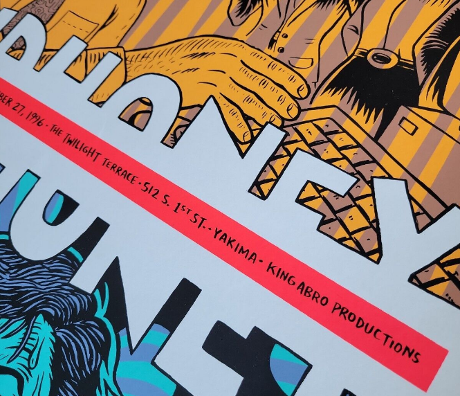

introduction
Fugazetteer makes it easy to get some insights and answer questions about the Fugazi Live Series. It also provides several new ways of finding shows to listen to.
The sections and headings below follow the app’s own page structure, so open the app itself alongside this vignette and follow along in the corresponding section/page as you read.
The app has 15 pages spread across 5 sections:
today (1 page) - provides a summary of Fugazi shows on this day in history.
flow (9 pages) - includes top-level menus for ‘year’ and ‘tour’ which will filter the contents of all the pages in this section.
stock (4 pages) - includes a top-level menu for ‘release’ which will filter the contents of all the pages in this section.
quiz (1 page) - links to Fugazi Live Series Quiz #1 and shows the high scores to date.
index (1 page) - links to Fugazi Live Series Link Track Index and shows the contents of the index.
Most of the pages have a visualisation (map or graph) and a data table further down the page, with the exception of ‘transition’, ‘details’ and ‘search’ which only have data tables.
Most pages have a download button located to the right of the menu controls, or at the bottom of the page if there are no menu controls, which can be used to download the data table as a CSV file.
Most of the input boxes are ‘selectize’ controls - when you select the control a menu will appear, and if you start typing the menu will be filtered by what you type. You can select any number of items or none at all.
A few of the input boxes are menus where you can only select one option - these have a little down arrow to the right side of the input box.
The data for songs is limited to songs that were played live at least twice in the Fugazi Live Series. That is 92 songs which feature in the Fugazi discography and two unreleased songs - ‘Preprovisional’ and ‘World Beat’.
The release dates are best estimates based on the available evidence. Actual release dates will have varied depending on the location.
The show locations have been determined as closely as possible using the available evidence. The search started with the information on the Fugazi Live Series website, including any flyers and comments. Google Maps would find some places quickly but others would be more difficult - many of the venues are no longer there. The search was broadened using sites like setlist.fm, which sometimes had addresses for old venues, reading online publications, and reaching out to people who might remember where the venues were located.

There may still be “false positives” - cases where an address was found but the address might be wrong. Please let me know if you find anything that needs correcting.
today
This page provides a summary of Fugazi shows on a day in history.
By default your local date and time will be shown - today. If you wish, you can edit the date in the input box to see the Fugazi shows on another date.
flow
pulse stalls
uncut but clotted
when you had thought it
would force a flow
- last chance for a slow dance by Fugazi (1993)
This section focuses on the tours and live shows, and most of the pages have a time dimension to them. The top-level menus of ‘year’ and ‘tour’ can be left blank but if applied will filter the contents of all the pages in this section. This is useful if you are interested in a specific year or tour. Note that you are not limited to just one year or just one tour, in both cases several can be specified if you wish.
When a box is blank it means there is no filter applied to the data for that variable. The selections apply sequentially from left to right and from top to bottom. For instance, if you select a year the remaining menus will be filtered to show only data for the selected year.
shows
The map shows the locations of the Fugazi shows and the table below the map has some details of each show and a link to the corresponding page on the Fugazi Live Series site.
The marker colours go from dark red to light red in chronological order, with the most recent shows having the lightest colour.
The data can be filtered by typing in the selection boxes for countries and cities.
The map has zoom controls and by clicking and dragging you can pan the map view. The area of the red circle for each show is proportional to the attendance of the show. If you click on the red circle for a show a pop-up will appear with the date, the venue, the city, the attendance, and the coordinates - in case you should want to look for a place using a different mapping application.
The timeline slider below the map allows filtering the data by date. The position of the slider control corresponds to the oldest date of the selection, so if you move the slider forward from left to right you will progressively filter out older shows.
There are some specific controls for use with the timeline slider:
the ‘map marker’ button will change the period to 1 week and the step to 1 day, starting at the date selected with the timeline slider. It will also change the start and end dates of the timeline slider to match the start and end dates of the tour. You can then step forward through the tour one day at a time, or use the ‘play’ button to the bottom-right of the timeline to animate the tour.
‘fast-forward’ will move the selection forward in time by one step
‘rewind’ will move the selection back in time by one step
‘home’ will move the timeline slider back to the beginning and set the period to 792 weeks again, to select the entire series. It is recommended to use the home button before changing the selections in the selection boxes above the map.
Pressing the ‘home’ button reveals additional controls:
period_weeks indicates the duration of the selected period in weeks. It is initially set to 792 weeks which covers the full duration of the Fugazi Live Series.
step_days indicates the size of each step in days, this is for use with the fast forward and reverse buttons.
These controls can be used to customise how the timeline works. For instance, if you set ‘period_weeks’ to 52 and ‘step_days’ to 365, then the map will show a year’s worth of shows from the date shown on the timeline, and the forward and backward buttons will shift the period shown forward or backward by 1 year. This can be useful if you want to skip through the whole timeline quickly, one year at a time.
Unticking the ‘show’ checkbox will hide the ‘period_weeks’ and ‘step_days’ controls. This makes the interface less cluttered and will be especially useful on mobile devices with small screens.
The data table below the map and the timeline controls shows summary data for the selected shows.
Each of the following columns can be sorted using the sort controls to the right of the variable name:
fls_link - a link to the corresponding page of the Fugazi Live Series site
date
venue
city
country
attendance
minutes - duration of the show in minutes.
tempo_bpm - average tempo of the show in Beats Per Minute.
sound_quality - Sound quality rating: Excellent, Very Good, Good, or Poor.
with
This page offers information on the bands that Fugazi played with, as either a summary and a map:
map - show locations with a different colour for each band
summary - shows the number of shows played with each band
map
The map will show the show locations, using a different colour for each band.
The data table accompanying the map shows details for each show and a link that can be used to navigate to the corresponding page of the Fugazi Live Series site.
summary
The summary option shows a bar chart and a simple data table. The information will be limited to the top 20 bands if no bands are specified. If you specify one or more bands, the bar chart and the table will show the data for these bands.
The summary data table will detail the number of shows with each band in descending order.
attendance
This page offers a choice between ‘summary’ and ‘details’.
summary
If you choose ‘summary’ the graph will show cumulative attendance.
The colours identify specific tours. The graph is interactive - if you hover over a point it will display details of the date, the cumulative attendance and the tour.
The ‘summary’ data table will show summary data for each tour.
Each of the following columns can be sorted using the sort controls to the right of the variable name:
tour
start - start date of the tour
end - end date of the tour
shows - number of shows
days - duration of the tour in days
attendance - total attendance for the tour
cumulative_attendance - comulative attendance since the start of the Fugazi Live Series.
details
If ‘detailed’ is chosen, the graph will show the attendance of each show in the selected period, this is most useful when you want to focus on a specific tour.
The data table will show information for the specific shows in the selected period.
Each of the following columns can be sorted using the sort controls to the right of the variable name:
tour
fls_link - a link to the corresponding page of the Fugazi Live Series site
date
attendance - attendance of the show (some of these are rough estimates when no data provided on the FLS site)
sound_quality
xray
This page offers a stacked bar chart designed to show the composition of each show in a variety of ways.
The ‘graph’ menu offers three options:
releases - show how many songs were drawn from each release. This option includes only songs.
unreleased - show how many songs were unreleased at the time. This option includes only songs.
other - show how much of each show is songs and how much is other stuff (intros, interludes, encores, one-offs and outros). This option includes all the tracks of each show.
The ‘units’ menu offers two options:
tracks - y-axis of the graph in units of tracks
minutes - y-axis of the graph in units of minutes
Try the different combinations of ‘graph’ and ‘units’ to see, for example, how the composition of a tour by release compares to its composition by released/unreleased status, or by songs versus other material.
The data table below the graph provides summary data for each show:
fls_link - a link to the corresponding page of the Fugazi Live Series site
date - the date of the show
songs - the total number of songs, or number of minutes of songs, depending on the selected units.
The remaining columns will vary depending on whether the option selected for ‘variable’ is ‘releases’, ‘unreleased’, or ‘other’. All columns can be sorted, which makes it easy to find the shows with the most songs, the most unreleased songs, the shows with the most songs from a particular release, and so on.
renditions
Here you can select specific songs and see information on how the number of times they were played varied over time. For instance, you could select songs that were all played a limited number of times, often over a very limited period of time, to see how their rendition counts grew over that period.
The graph shows the cumulative rendition counts for a selection of songs that were played in the specified period. To avoid the graph getting cluttered the songs are sorted in descending order of growth rate over the period, and the song selection is limited to a maximum number of songs. The maximum number of songs to be shown can be varied using the slider control under the graph.
The data can be filtered by the following variables:
years
tours
These filters are applied sequentially from left to right.
The graph shows a lot of detail on how each song fared across the live series, including ‘flatline’ periods where songs were not played at all, and periods of steep growth where songs were played night after night for significant periods.
The data table shows summary information for each song over the specified period.
The data table offers the following columns:
release_title
title
from - first time performed (within the selected time period)
to - last time performed (within the selected time period)
released - corresponding release date
count - number of times performed (within the selected time period)
The dates and performance counts correspond to the selected data, so these values will change whenever you change the filters for years or tours.
The data table can be downloaded to a CSV file using the download button at the top of the page to the right of the ‘songs’ selection box.
matrix
The heatmap shows the number of times each transition was performed. The graph is interactive - if you hover over a point, a pop-up will appear showing ‘to’ (song), ‘from’ (song) and ‘count’ - the number of times the transition was performed. The maximum number of transitions to be shown can be varied using the slider control beneath the graph.
The data table shows the number of times each transition featured in the specified period. The transitions are shown in descending order of plays.
The data table includes:
from - the first song in the transition
to - the second song in the transition
count - the number of times the transition was performed (within the selected time period)
transition
Here you can find shows that contain a specific transition between songs.
There are two filters:
from - the first song in the transition
to - the second song in the transition
The filters are applied sequentially from left to right, so for instance if you specify ‘life and limb’ in ‘from’, the menu for ‘to’ will only show songs which followed ‘life and limb’.
Both filters are optional. If only one song is specified shows containing that song will be listed. If no song is specified all the shows will be listed. There is a subtle difference between searching for shows containing a single song using the ‘from’ box and the ‘to’ box: the ‘from’ box will omit shows where the song was the final one of the set, and the ‘to’ box will omit shows where the song was the first one of the set. This is why searching for ‘glueman’ with ‘from’ yields only 25 shows but searching for ‘glueman’ with ‘to’ yields 131 results - ‘glueman’ was a hard song to follow!
The data table includes:
fls_link provides a link to the corresponding page of the Fugazi Live Series site
date - date of the show
transition - this is the number of the transition in the set, where 1 is the first transition in that show. Larger numbers will indicate that the transition was played later in the set.
title1 - the first song in the transition
title2 - the second song in the transition
sets
Here you can compare two or more shows to find out which songs are played in each, how many unique songs there are, and how many songs are played only once or in 2 or more of the shows. You can pick shows from the full series or you can filter first by year and/or tour to pick shows from a shorter list. For example, we can compare the three Swedish shows from the 2000 North European tour.
Note that the show identifiers are the same as those used on the Fugazi Live Series website and have the following format: city-country-(m)m-dd-yy. The month will be one or two digits depending on which month it is.
Once shows have been selected, two results tables will appear. The first is a summary table.
The summary table tells us that 52 unique songs were played: 32 songs were played only once, 12 songs were played twice, and 8 songs were played at all 3 shows. The three shows have 80 songs in total, including the repeated performances.
The Details table shows the complete list of songs, and for each song which show or shows it was performed at. The table is sorted in descending order of the number of shows each song was performed at, so in this case the top part of the table lists the 8 songs that were performed at all 3 shows.
The ‘details’ table can be downloaded as a CSV file using the download button at the top of the page to the right of the ‘shows’ selection box. .
stacks
Here you can choose any show (out of the 899 shows with set lists available to date) and then a stack that contains the selected show. The stacks are named after the initial show that was chosen when the stack was created. Many shows appear in only one stack but some shows appear in many stacks. Once you have chosen a show and a stack, you will get a short sequence of 9-12 shows including the selected shows and covering all 94 songs that Fugazi played live at least twice.
Once a stack has been selected, two results tables will appear. The first is a summary table, including links to the shows.
The second table provides details of the shows in which each song was played.
The summary table can be downloaded to a CSV file using the download button at the top of the page to the right of the ‘stack’ selection box.
recap
Here you can choose any single show (out of the shows with set lists available to date) and see everything about it in one place: the venue and date with a link to the corresponding page of the Fugazi Live Series site, its distance from “home” (Washington, DC, where the first-ever Fugazi show took place), where it fits in its tour, how many times Fugazi had previously played in that country, state/province, city and venue, and (if a recording of the show exists) how many songs were played, how long the recording runs (and, where the recording’s non-song content was tagged separately, how many of those minutes were music), its sound quality rating, and which releases its songs are drawn from. The previous and following show are also named, each with its own distance from this one when the two were part of the same touring trip (as opposed to two separate home-based outings) - this is worked out from geography and dates, not from the show’s named tour, so it can occasionally differ from what the tour name alone would suggest.
Below that, a “Notes:” bullet list flags anything unusual or noteworthy about the show or setlist - one bullet per fact - and is simply omitted when there’s nothing to say. This includes whether this show set a record for attendance, ticket price (in USD), was the northernmost or southernmost Fugazi show, was the show furthest from home, or was one of the handful of festival shows Fugazi ever played (these apply even for shows with no surviving recording), and, if a recording exists: a rarely performed track, a song played out of its usual set position or twice in one show, a soundcheck, and other one-off curiosities. If the recording’s non-song content wasn’t tagged separately from the songs at all, or was tagged but includes no track specifically marked as an interlude (an intro, outro or encore alone doesn’t count), a note flags that individual song durations shown may be over-estimated as a result - the presence of a genuine interlude track, however brief, is taken as evidence the split is trustworthy. A song’s rendition is also called out if it’s the longest or shortest ever recorded, or still unusually long or short - by default, one of the top or bottom 5% of every recorded rendition of that song - and, separately, if it’s the very first or most recent one recorded (this last check is skipped for the single earliest and single most recent recorded shows themselves, since every song in those two setlists would otherwise trivially qualify). Songs sharing the same longest/shortest-rendition category are grouped into a single bullet rather than one bullet each; an unusually short rendition under a set duration (60 seconds by default) is additionally named in its own bullet as possibly having an incomplete recording.
A map shows the location of the show.
Below the map, if a recording exists, a detailed tracklist is also shown, listing every track on the recording - songs and non-song content alike (interludes, intros, outros, encores and other one-offs) - with each track’s duration. For songs, it also gives: the song’s average recorded duration across all Fugazi shows; its position in the set and its average position across all recorded renditions; which numbered rendition of the song this was and its total number of recorded renditions; if it followed directly on from another song, which numbered occurrence of that song-to-song transition this was and its total number of occurrences across all shows; and the release date it is drawn from.
The whole page can be downloaded as a self-contained HTML take-away document using the download button at the top of the page to the right of the ‘show’ selection box. The downloaded document can also be printed to PDF directly from the browser (e.g. File > Print > Save as PDF): the tracklist table is sized to fit the page width so it isn’t cut off.
stock
Laws of stimulation /
Signed anonymous
It’s just a stock set-up
- Foreman’s dog by Fugazi (1998)
discography
The bar chart shows summary data for each song of each Fugazi release, sorted in ascending order of release date and track number from top to bottom.
The legend can be turned on or off - you may prefer to have it off if you are using a device with a small screen.
The ‘variable’ menu has five options:
count - the number of times the song was performed in the Fugazi Live Series. All else being equal, older songs tend to have higher counts because they were available in the band’s repertoire for more shows.
intensity - the number of times the song was performed divided by the number of shows since the song’s debut. This variable normalizes the counts by the potential maximum number of performances to give fairer treatment to newer songs.
rating - the rating calculated for the song based on preferences implied by the choices of which songs to play.
tempo_bpm - tempo in Beats Per Minute.
minutes - duration in minutes
The contents of the data table will vary depending on whether or not one or more releases have been specified.
unfiltered
If no release filter has been applied, the data table will show summary information for each release.
The data table includes the following columns, all of which can be sorted:
release_title
first_debut - the date of the first debut from this release
last_debut - the date of the last debut from this release
release_date - this is an assumption based on the available evidence. Actual release dates will have been different in different places.
songs - number of songs on the release
count - total number of performances of the songs on the release
shows - number of shows at which songs from the release were performed
intensity - the average of the intensities of the songs on the release
rating - the average of the ratings o f the songs on the release
tempo_bpm - the weighted average tempo of the release in Beats Per Minute (weighted by the duration of each song)
minutes - the total duration in minutes
The counts, intensities and ratings give different results if they are used to rank the releases. Repeater was the album that yielded more live performances than any other in Fugazi’s catalogue, but The Argument had the highest performance rate in relation to the number of shows at which these songs were available. The top 3 places are the same in terms of rating and intensity, but further down the table there are differences - the Fugazi EP is ranked higher than Red Medicine and In on the Killtaker when the releases are ranked by rating. This is probably because the ratings take into account the age of the releases and separate the effects of age from the implied preferences.
filtered
If one or more releases are specified using the top-level menu, both the graph and the data table will adapt to focus on the selected releases.
The data table includes the following columns, all of which can be sorted:
release_title
track_number
title
count - total number of performances of each song
intensity - the performance intensity of each song (renditions / potential shows)
rating - the rating calculated for the song based on preferences implied by the choices of which songs to play.
tempo_bpm - the tempo of the song in Beats Per Minute.
minutes - the duration in minutes.
variation
This page shows cumulative distributions and summary data for the renditions of each song, using either of two metrics selectable from the “metric” dropdown next to the songs selector: duration (the length of the rendition, in minutes) or position (the song’s normalized position within the show’s setlist, from 0 for the first song to 1 for the last song). You can filter the contents to be displayed on the graph by release or by song, and in both cases several can be chosen. The graph will show by default a maximum of 10 songs - this maximum number of songs can be varied using the slider beneath the graph.
The data table below the graph shows summary data for renditions of the selected songs.
When duration is selected, the data table includes:
renditions - the number of times the song was played
minutes_min - the minimum duration. In many cases this will be as short as it is because the recording was cut off, not because the band played the song really fast.
minutes_median - the median duration: if all the renditions were lined up in order from shortest to longest this would be the middle one.
minutes_max - the maximum duration.
minutes_mean - the average duration.
minutes_sd - the standard deviation of the duration - this is a measure of spread, it indicates how much variation there is across all of the renditions.
When position is selected, the data table includes the equivalent columns for the song’s position in the setlist instead:
renditions - the number of times the song was played
position_min - the minimum normalized position (0 = first song in the set).
position_median - the median normalized position: if all the renditions were lined up in order from earliest to latest in the set this would be the middle one.
position_max - the maximum normalized position (1 = last song in the set).
position_mean - the average normalized position.
position_sd - the standard deviation of the normalized position - this is a measure of spread, it indicates how much variation there is in where the song falls in the set across all of the renditions.
Neither view includes a total column in the app - it isn’t a meaningful figure for position, and for consistency it’s left out of the duration view too.
The data table can be downloaded as a CSV file using the download button at the top of the page; the downloaded file reflects whichever metric is currently selected.
details
On this page you can select a song and get a table listing all the shows containing the specified song, its position in that show’s setlist, and the duration of each specific rendition (in minutes). You can also select more than one song. The table headers can be used to sort the data, so for instance you can find the shows with the longest (or shortest) renditions of a particular song, or the earliest/latest it was played in a set. The search box can be used to filter for a particular show so you can see the details of all the songs played in that show.
fls_link provides a link to the corresponding page of the Fugazi Live Series site
date - date of the show
song_number- this is the number of the song in the set, where 1 is the first song in that show. Larger numbers will indicate that the song was played later in the set.
position - the song’s normalized position in the set, from 0 (first song) to 1 (last song).
title - the name of the song
duration - the duration of the song in minutes.
The table can be downloaded as a CSV file using the download button at the top of the page.
search
This page allows you to search for shows that contain a specific selection of songs.
The data table lists the shows that contain any of the specified songs (or all the shows if none were specified), including the following columns:
fls_link provides a link to the corresponding page of the Fugazi Live Series site
date - date of the show
hits - the number of the specified songs included in the show (or the number of songs if none were specified)
sound_quality - Sound quality rating: Excellent, Very Good, Good, or Poor.
If you filter by release but not songs the data will be limited to all shows containing songs from the specified release. This provides a neat way of finding shows with many songs from your favourite album - for instance, filtering by ‘End Hits’ and sorting in descending order of hits will surface the shows with the most ‘End Hits’ songs in the set.
quiz
For further information about the quiz, follow the link at the top of the quiz page. If you are ready for a challenge, give it a try!
The top half of the scores will be included in the High Scores table. If you complete the quiz and place in the top half, your entry will be included, although you might need to re-load the page for the content to be refreshed with the latest responses data. The total points shown are the total points that were available at the time that each entry was completed - every now and then this total might change die to new questions being added, old questions being removed, or changes being made to the value of each question. The percentage is the score divided by the total available points in each case, and it is this value that is used to sort the table.
index
Fugazi used to play “link tracks” in practices, sound checks, and sometimes as introductions or interludes at shows. Some of them feature in the live series but they are hard to find because they often have generic names like “intro”, “interlude”, “encore”, or “link track”. I noticed there are a few of these that get played repeatedly, sometimes over a period of years, so I started giving them index numbers to make it easier to find and compare these pieces of music. So far I have found 3 different link tracks that got played live at least twice. I’ve given them the same index number if they seem to be the same piece of music. The idea is to add new numbers to the link track index for other link tracks that are different from the ones that have been found so far. Please add to the link track index if you come across any other ones - using the ‘Link Track Index’ link will take you to a form where you can enter information. Any link track information you add using the form will be included in the link track index shown on this page of the Fugazetteer site.
Thanks.